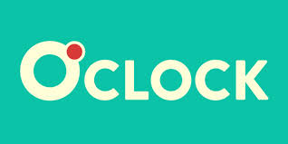
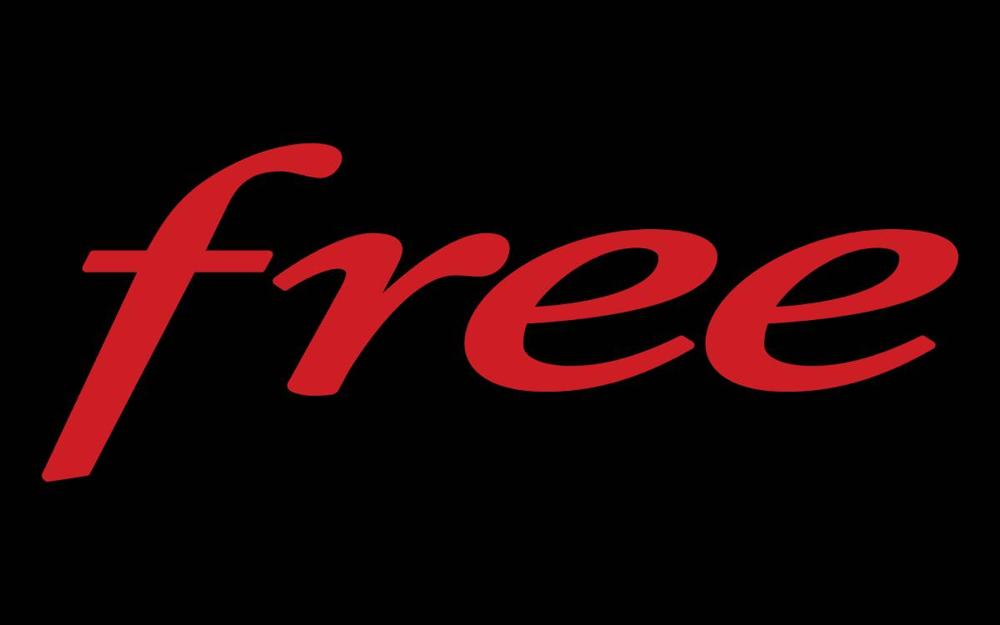
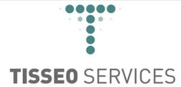

Mehdi Kedadouche
Développeur Web

 : 07 69 79 63 03
: 07 69 79 63 03 Contactez-moi
Contactez-moi -
 : 22 avenue de plaisance 95100 Argenteuil
: 22 avenue de plaisance 95100 Argenteuil
 linkedin.com/in/mehdi-kedadouche/
linkedin.com/in/mehdi-kedadouche/
Actuellement en reconversion professionnelle à l'école  après avoir découvert le monde passionnant du développement web💻 . Mes différentes expériences professionnelles dans le domaine du réseau🌐télécommunications m'on permis d'acquérir un excellent sens de l'analyse et résolutions des problématiques , de la communication et de la persévérance sans oublier le travail en équipe qui se révèlent être de véritables atouts pour ma nouvelle carrière de développeur. Animé par la soif d'apprendre et de découvrir, j'ai décidé de relever ce nouveau défi avec enthousiasme et détermination. Investit à 100% dans ma formation à l'école O'clock, je suis sûr d'acquérir les compétences nécessaires pour créer des produits web de qualité et offrir des expériences utilisateur exceptionnelles. Si vous cherchez quelqu'un de motivé, passionné et persévérant pour collaborer sur un projet, n'hésitez pas à me contacter. Je suis prêt à relever tous les défis pour réussir dans ce domaine et m'épanouir professionnellement.
Experiences Professionnelles
O'clock | Technicien Réseaux et Télécom
Mollitia est culpa fugit, iste in beatae. Sint, cumque quo tenetur velit illum, repellat aliquam deserunt
alias tempore necessitatibus asperiores accusamus excepturi provident ut cupiditate vel. Magni fugit
dolorum,
quaerat porro sapiente totam eaque accusantium soluta modi quisquam. Quam necessitatibus sed praesentium!
ILIAD  | Technicien Réseaux et Télécom
Avril 2019 – Décembre 2022Mollitia est culpa fugit, iste in beatae. Sint, cumque quo tenetur velit illum, repellat aliquam deserunt alias tempore necessitatibus asperiores accusamus excepturi provident ut cupiditate vel. Magni fugit dolorum, quaerat porro sapiente totam eaque accusantium soluta modi quisquam. Quam necessitatibus sed praesentium!
Tisseo  | Technicien Télécom et Fibre Optique
Janvier 2019 – Avril 2019Mollitia est culpa fugit, iste in beatae. Sint, cumque quo tenetur velit illum, repellat aliquam deserunt alias tempore necessitatibus asperiores accusamus excepturi provident ut cupiditate vel. Magni fugit dolorum, quaerat porro sapiente totam eaque accusantium soluta modi quisquam. Quam necessitatibus sed praesentium!
Formations
Formation développeur Wev et Web mobile - TP Niveau V -
Février 2023 – Octobre 2023
- 3 mois de socle : HTML5 - CSS3 - Javascript - PHP
- 1 mois de spécialisation Php : Symphonie
- 1 mois de projet de fin de formation
DIPLÔME / NOM DE L’UNIVERSITÉ OU ÉCOLE
20xx – 20xx
Mollitia est culpa fugit, iste in beatae. Sint, cumque quo tenetur velit illum, repellat aliquam deserunt
alias tempore necessitatibus asperiores accusamus excepturi provident ut cupiditate vel. Magni fugit
dolorum,
quaerat porro sapiente totam eaque accusantium soluta modi quisquam. Quam necessitatibus sed praesentium!